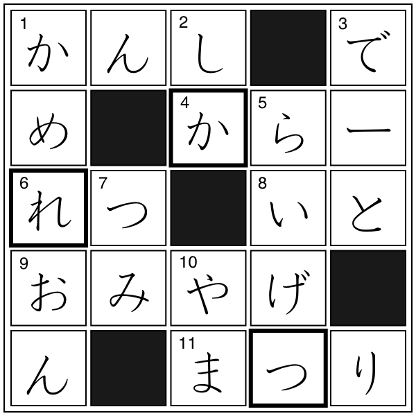

クロスワード
解答
クロスワード

【→
問題
〔
PDFファイル
〕
】
太枠の文字を組み合わせてできる単語
つかれ（疲れ）
▼
かれつ（苛烈）
▼
れつか（劣化）
※
▼
は１級相当以上の単語
例文
30才を過ぎると、体の疲れがとれなくなる。
デパートの間で
▼
苛烈な
▼
争
(
あらそ
)
いが続いている。
消費期限前に
▼
品質
(
ひんしつ
)
が
▼
劣化している場合もある。
※
▼
は１級相当以上の単語
単語リスト
語(読み)
漢字／原語
分類
発音
中文意思
▼
は１級相当の単語と漢字、
▽
は１級リスト外の漢字を示す
カメレオン
chameleon
動物
外来語
3
しか
▽
鹿
動物
0
デート
date
外来語
1
らいげつ
来月
1/0
つみ
罪
1
やま
山
2
かんし
▼
監視
-スル
0
カラー
color
外来語
1
れつ
列
1
いと
糸
1
おみやげ
お土産
0
まつり
祭
0
つかれ
疲れ
3
ページの先頭へ↑
←ひとつ前に戻る
目次へ
トップページへ